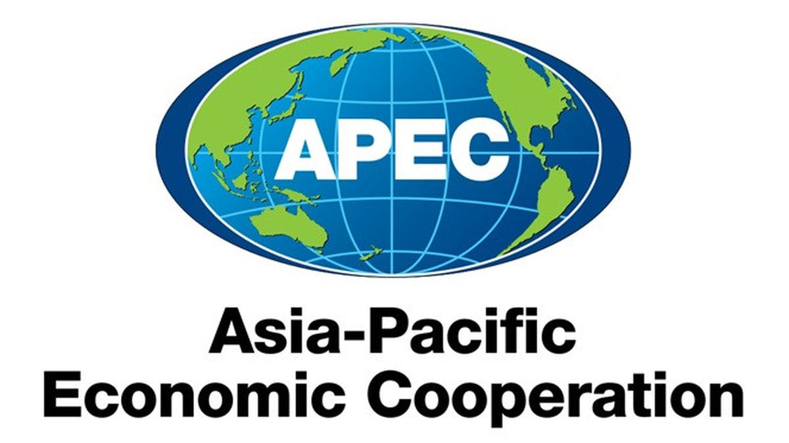
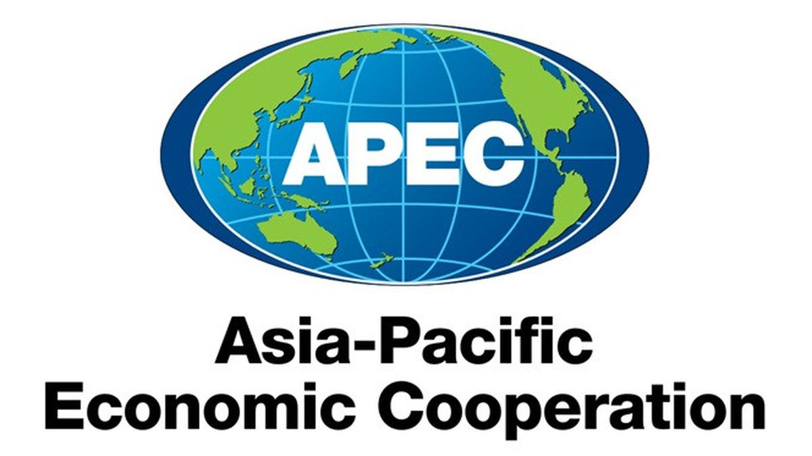
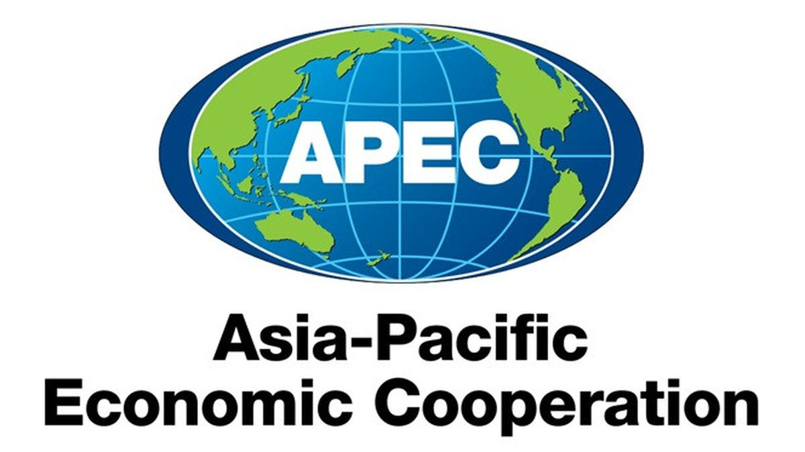

Gallery
.jpg) 


Gwynne 92/24

APEC atau Asia Pacific Economic Cooperation adalah sebuah organisasi di kawasan Asia Pasifik dan untuk meningkatkan perdagangan dan kerjasama bisnis antar negara di kawasan Asia Pasifik. Tujuan APEC adalah untuk meningkatkan kerjasama perdagangan, meningkatkan infrastruktur, mengembangkan sdm dari berbagai negara. APEC didirikan pada tanggal 1989. Salah satu program APEC adalah ABTC. ABTC adalah APEC Business Travel Card. ABTC ini berguna untuk para pengusaha yang ingin melakukan business travel tanpa sulit. Para wisatawan akan dijadikan prioritas sehingga saat ingin melakukan business travel lebih mudah aksesnya.
Hubungan APEC dengan Indonesia
Indonesia masuk ke dalam APEC pada tahun 1989, ada 21 negara Asia Pacific yang masuk ke dalam APEC. APEC mempunyai tujuan untuk mengurangi isu-isu perdagangan antar negara dan harus perbanyak hubungan antarnegara supaya perdagangan dan investasinya berhasil. Tak hanya itu, pada tahun 2013 Indonesia pernah menjadi tempat dimana acara besar APEC Leaders' Meeting diadakan, tentunya diadakan di Bali. APEC di Indonesia memegang ekonomi dan perdagangan internasional.
Hubungan APEC dengan Kamboja
Walaupun Kamboja tidak masuk ke dalam anggota APEC, namun negara ini telah sedikit berpartisipasi dengan cara mendukung kegiatan-kegiatan APEC dan lain-lainnya. Hubungan Indonesia dan Kamboja sudah erat juga di bilateral dan juga Multilateral.
APEC APEC INDONESIA APEC LEADERS' MEETING INDONESIA KAMBOJA INDONESIA KAMBOJA